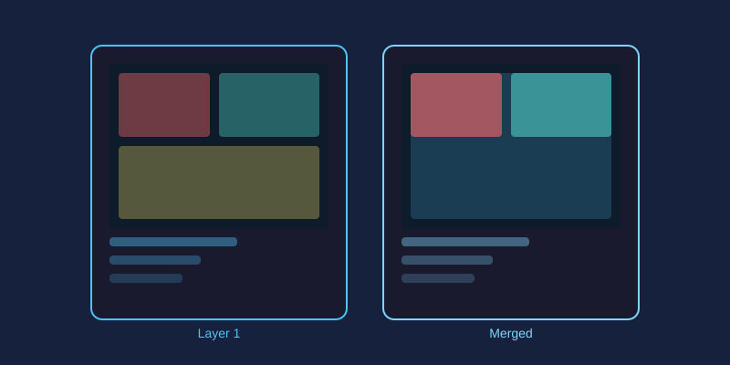

If photo editing had one concept worth mastering above all others, it would be layers. Once layers click, everything else in an editor starts making sense. This guide explains the idea from zero and shows you two classic projects that prove how powerful it is.
What Exactly Is a Layer?
Think of a stack of transparent sheets of glass. Paint on the top sheet and it hides whatever is beneath; leave a sheet empty and you see straight through to the ones below. Digital layers work identically. Your base photograph sits at the bottom of the stack, and every addition, such as text, shapes, adjustments, or pasted images, lives on its own separate sheet above it.
Why Layers Matter
Without layers, every edit permanently alters your photo. With layers, each change stays independent:
- Non-destructive editing: delete or hide any layer and the original is untouched
- Reordering: drag a layer up or down the stack to change what appears in front
- Isolated changes: adjust one element without disturbing anything else
- Experimentation: try five different headlines as five text layers and toggle them on and off
Opacity: The Transparency Dial
Every layer has an opacity setting from 0 to 100%. At 100% the layer fully covers what is below; at 50% it blends halfway with whatever sits underneath. Dropping a dark overlay layer to around 40% opacity is the standard trick for making white text readable over a busy photo while keeping the image visible.
Blend Modes: How Layers Interact
Blend modes control the math between a layer and the one below it. A few worth learning first:
Multiply: darkens; great for dropping logos onto light backgrounds so white areas vanishScreen: lightens; perfect for adding glows, light leaks, and bokeh texturesOverlay: boosts contrast; ideal for texture layers like grunge or paper grainSoft Light: a gentler overlay for subtle toning
The fastest way to learn these is to duplicate a photo, fill the copy with gray, then cycle through every blend mode and watch what happens.
Layer Masks in One Paragraph
A mask controls which parts of a layer are visible using black, white, and shades of gray. Paint white where you want the layer to show and black where you want it hidden. Unlike erasing, masking is reversible at any time, which makes it the professional way to combine images.
Project 1: Text on a Photo
- Open your photo; it becomes the background layer
- Add a new text layer with your headline
- Create a rectangle layer filled with black beneath the text and set its opacity to 40%
- Nudge, recolor, or retype anything independently; nothing else moves
Project 2: Double Exposure Effect
- Place a portrait as the bottom layer
- Add a tree or cityscape layer above it
- Set the top layer's blend mode to
ScreenorLighten - Lower opacity to taste and add a mask to fade the edges
Both projects take under five minutes in miniPhotoShop's layer panel. Open two images, experiment with stacking and blend modes, and you will quickly understand why every serious editor is built around layers.